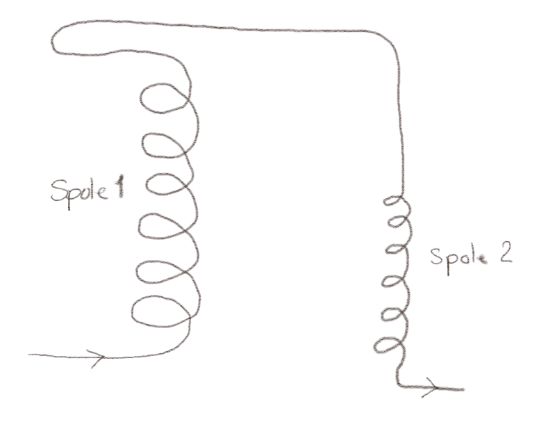

(Lærebok 14.4.1)
Den samme strømmen \( I \) strømmer gjennom to spoler som vist i figuren. Spole 1 er dobbelt så lang, har dobbelt så mange vindinger, og har dobbelt så stor diameter som spole 2. (Du kan se bort fra vekselvirkningen mellom spolene).

a) Hva er forholdet mellom det magnetiske feltet i spole 1 og spole 2?
For en solenoide er \( B = \mu_0 (N/l) I \) hvor \( \ell \) er lengden til solenoiden.
\( B_1 = B_2 \)
Det magnetiske feltet inne i solenoiden er avhengig av antall viklinger \( N \) og lengden \( \ell \). De magnetiske feltene er derfor \( B_1 = \mu_0 I (N_1/ \ell_1) = \mu_0 I (2N_2)/(2 \ell_2) = \mu_0 I N_2/\ell_2 = B_2 \) slik at \( B_1 = B_2 \).
b) Hva er forholdet mellom magnetisk energitetthet for spole 1 og spole 2?
\( u_1 = u_2 \)
Energitettheten er \( u = (1/2) \vec{B} \cdot \vec{H} \) hvor \( \vec{B} = \mu_0\vec{H} \), slik at $$ \begin{equation} u = \frac{1}{2\mu_0}B^2 \; . \tag{13} \end{equation} $$ Fordi magnetfeltet er det samme i de to solenoidene er derfor også energitettheten den samme, \( u_1 = u_2 \).
c) Hva er forholdet mellom den magnetiske energien lagret i spole 1 og spole 2?
\( U_1 = 8 U_2 \)
Den magnetiske energien er gitt som $$ \begin{equation} U = \int_v u \d v \; , \tag{14} \end{equation} $$ Fordi \( \vec{B} \) er uniform inne i solenoiden er \( u \) også uniform inne i solenoiden. Energien er derfor gitt som \( U = u v \), hvor \( v \) er volumet av solenoiden. Solenoiden er formet som en sylinder med volume \( \pi a^2 \ell \) hvor \( a \) er radius og \( \ell \) er lengden. Vi vet at \( a_1 = 2 a_2 \) og \( \ell_1 = 2 \ell_2 \). Vi finner derfor at $$ \begin{equation} U_1 = \pi a_1^2 \ell_1 u_1 = \pi (2a_2)^2 (2\ell_2) (u_2) = 8 \pi a_2^2 \ell_2 u_2 = 8 U_2 \tag{15} \end{equation} $$
(Lærebok 14.4.6)